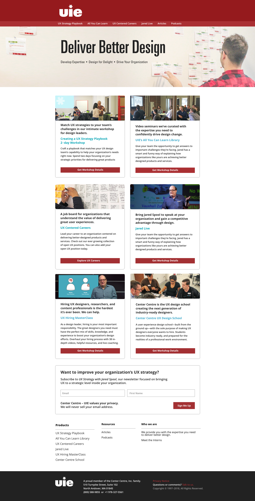
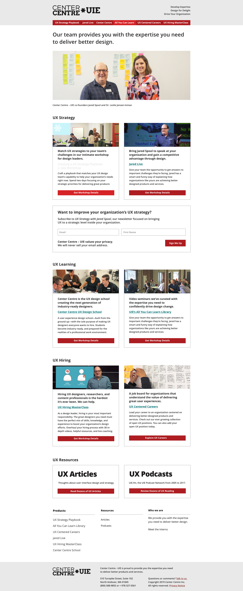
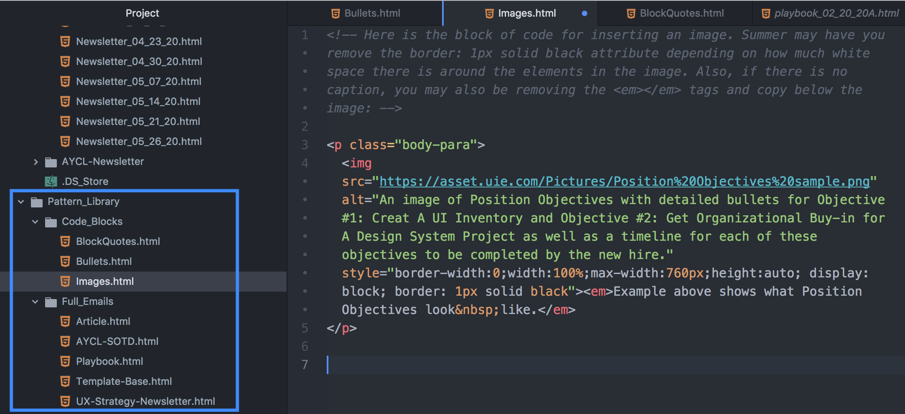
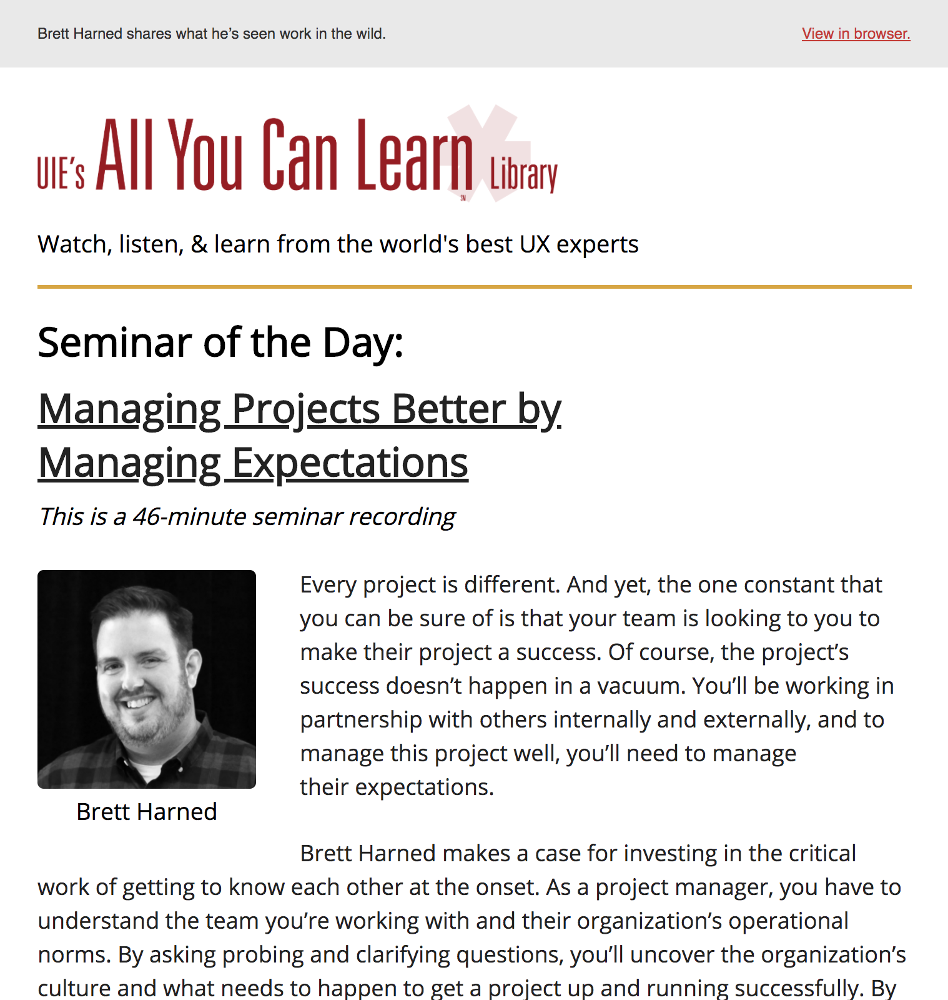
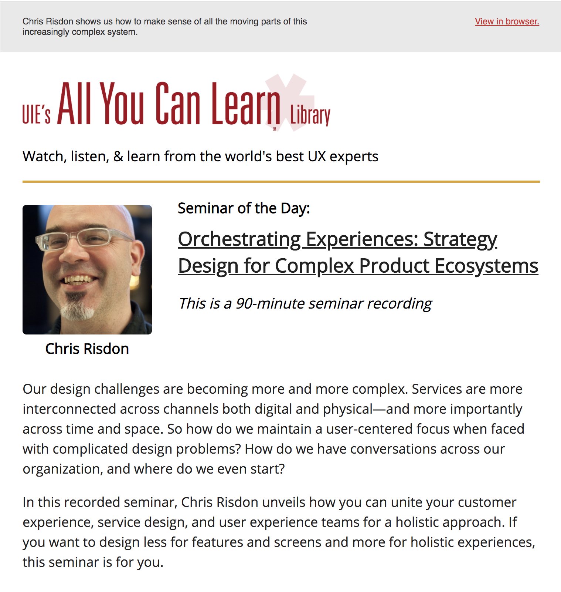
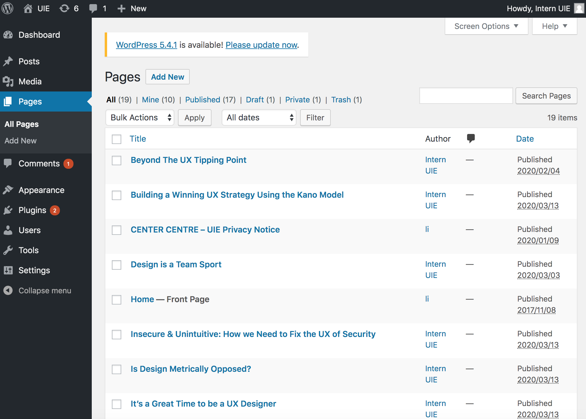
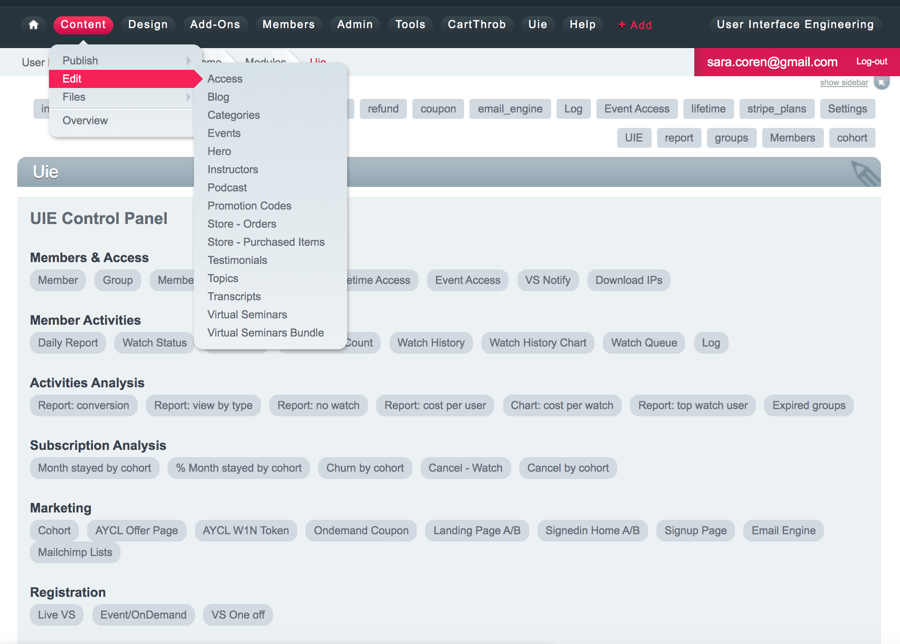
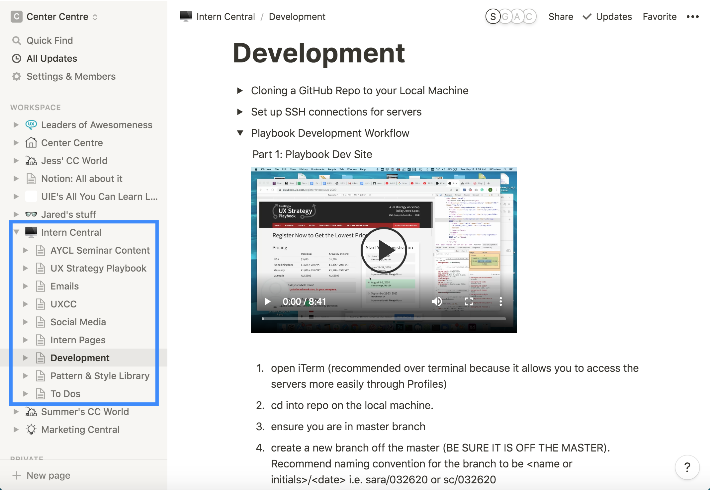

Wynzora
I am currently finishing up my full-time internship as a web developer with User Interface Engineering in North Andover, MA. This has been such a fantastic experience and I have learned so much about UX design and website development in my time at UIE. I have not only strengthened skills using tools like Adobe XD and MAMP, but I have also become more familiar with the development workflow using GitHub and pulling code onto our live servers and developing a Pattern and Style Library. I have also gained experience coding HTML emails and sending out campaingns to 40K users, updating content in 3 different Content Mangagement Systems, documenting all of our processes in Notion, and participating in the hiring and training of additional interns.
Technologies Used
WordPress
PHP
Advanced Custom Fields
CSS3
Photoshop
MAMP
Bitbucket
BrowserStack
Additional Websites
In addition to their UIE.com homepage, User Interface Engineering also maintains four other websites that contain content specific to each of their products and services. I have had an opportunity to work on all of these different sites, which has been very educational because they were all built very differently and run using different technologies.
Pattern and Style Library
Since UIE has a number of different sites that have been built over the years to serve different objectives as the company expanded, a need has arisen to unify these sites and give them a more cohesive feel through the foundation of a Pattern and Style Library. I am currently working to develop this Pattern and Style Library using Adobe XD to create mockups and using MAMP to view all of the changes I'm making in my local Git repo before I push the code up to GitHub and pull it onto the live server.
UIE Homepage Now
UIE Homepage Next
In addition to creating a Pattern and Style Library for our different websites, I am also creating templates with blocks of code to use in all of our different emails to ensure consistency across all email campaigns as well.

Emails
When I first started my internship at UIE, one of my responsibilites as a new intern was coding HTML emails and sending out email campaigns to over 40K subscribers on a daily basis using Mailchimp. During this time, I contributed to the restructuring of several different email templates to improve content layout and mobile responsiveness.
Before
After
Content Management Systems
With so many different sites built in different ways at different times, I gained exposure to updating content in 3 different Content Management Systems- WordPress, ExpressionEngine, and Statamic. I used WordPress and Statamic to add blog posts and ExpressionEngine to update content for our All You Can Learn Library's recorded seminars and track watch data for viewed recordings. I am also currently in the process of updating the CSS in our custom theme for the UIE.com site.
WordPress CMS
ExpressionEngine CMS
Documentation and Collaboration
We have been updating a lot of our processes and workflows throughout my time at UIE, so I have contributed greatly to writing documentation for future interns to use. We also recently started using Notion, which has proven to be an exceptional tool for documentation, organizaiton and collaboration. Over the past few months, I have built out an entire section in Notion for intern developers called Intern Central. In it, I have already created dozens of pages and sub-pages with background information, step-by-step instructions and Loom how-to videos for future intern developers to reference.

Hiring and Training
Another significant experience during my time at UIE has been being a part of the hiring and training process. As a key member of the hiring team, I have conducted a number of interviews with prospective interns and evaluated their skills and abilities using our extensive assessment criteria. I also trained and mentored a new developer intern remotely using Zoom for frequent training sessions and Slack to facilitate ongoing communication.